- Overview
- Grid Properties
- Controls Supported as Grid Columns
- Grid Control Example
- JavaScript in Grids
- Accessing Grids with JavaScript
- JavaScript Functions
- Hiding a Grid
- Fixed precision formulas in grids
- Change event handlers inside grids
- Disabling grids
- Getting grid rows
- Disabling grid rows
- Maximum number of grid rows
- Checking if a minimum number of grid rows
- Fixed number of grid rows
- Clearing a grid
- PHP in Grids
Overview
A grid is a graphic design that presents data in a tabular format consisting of columns and rows. For Dynaforms on ProcessMaker 3, each column is represented by a control and each row of the columns is a registry of this control. To add a new grid to a DynaForm design, drag the icon below from the toolbar on the left panel and drop it onto the design:

After adding the control, the grid will be shown as follows:

This grid neither comprises any column nor any data related to it yet. To define the columns, drag a control to the grid which will enable the first cell and drop it inside it.
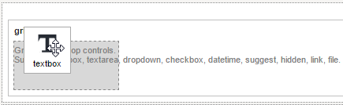
Note: Do not forget to set the column width of the control to obtain a correct rendering of the columns in the field. Also, take a look at this section to view which controls are supported inside grids.
As more columns are added, cells in the grid will be enabled at any position the control is brought.
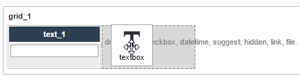
It is only possible to insert data inside the grid when checking the DynaForm in its preview (which does not save the data) or when running a case.

Warning: Data can be lost when columns within the same grid are changed in different tasks Dynaforms on the same process. Consider the following example:
- In the first task of a process, the Dynaform has a grid with three columns.
- In the second task, you delete one of the columns of the same grid.
- In the third task, you recreate the column you deleted in the second task's Dynaform.
If you run a case of that process, data is lost in the grid between the first task and the second. This is because the grid in the second task has one column fewer than in the first task. Despite that the grid has three columns in the third task, the data that was lost between the first task and the second cannot be restored.
Use the "New" link at the upper left-hand corner of the grid to add a new row.

To delete a row, click on the button with the trash icon at the right side of each row.
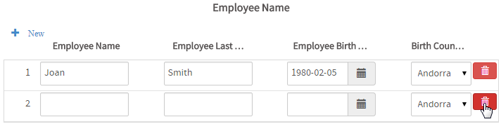
Note: Until ProcessMaker 3.0.1.7, Grids in ProcessMaker Web Edition are created always with at least one row and the first row can not be deleted.
From ProcessMaker 3.0.1.8 on, the first row can be removed.
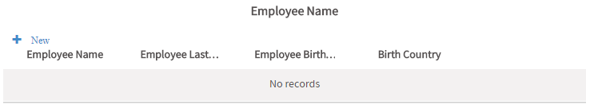
Note: If using grids with a large number of rows, then settings in the php.ini file need to be increased to allow over 1000 total fields in a DynaForm. See Increasing the maximum number of DynaForm fields.
Grid Properties
Click on a grid to display its properties on the left panel:

Each control added in the grid works according to its own definition and properties defined. Take into account that, inside the DynaForm design, only the columns of the grid are defined, some other grid characteristics are set in its properties:
| Property | Description |
|---|---|
| Type | grid (readonly) |
| Variable | Click on the ... option to select the variable from the list of available variables. See this section to learn more of how to relate a variable to a control.
|
| Variable Data type | After a variable has been related to the control, this property shows the data type of the variable (readonly). |
| ID | [Required] Control and HTML unique identifier. |
| Title | Set the title of the grid in this property |
| Hint | Used to show help when the grid is rendered. It is shown when the pointer of the mouse is hovered over the ? icon.
Warning: The Hint icon and message in a grid are cut-off in ProcessMaker mobile. This is a known issue that will be fixed in upcoming versions of ProcessMaker. |
| Required | By checking this option, an asterisk is added in the label to indicate that the field is required. It means that field needs to be mandatorily fulfilled from the control. When a required field is not filled-in with any value, it will not be possible to go to the next step. |
| Display Mode | [Required] Display mode:
|
| Layout | [Required] This property defines the format how the grid will be shown when rendered. The options of this property are the following:
|
Page Size | [Required] Define the number of rows display per page. |
Add Row | Enable the add row button |
| Delete Row | Enable the delete row button |
* No longer available from version 3.0.1.5
Layout
This property sets the way grids will accommodate their rows since the moment they are rendered in the preview of the DynaForm or when running a case.

The options for this property are:
- Responsive
- Static
For this property, take into account that the column width of the controls inside the grid must be correctly configured for a good performance.
When the layout of the grid is set as responsive, the columns accommodate immediately according to the size of the screen making them wider or shrinking them. For the static layout, the grid maintains its size despite the size of the screen. In this type of layout, if the length of the grid surpasses the length of the screen, a scroll bar enables so users can still work with the grid. See the figures below to view the differences among them.
Responsive Layout

Static Layout

Page Size
This property sets the page size of the grid. Gets or sets the number of items to display on a single page of the grid.

When rendering the form and adding more row in the grid than the size defined in this property, a new page is added and the navigation control appears at the bottom of the grid.

By default, this property is set as "None", thus the rows of the grid are added one after another
Add Row
This property sets if the grid will have the "New" button enabled or not by checking or unchecking it. By default, this option is checked, which means the "New" button is enabled when rendering the grid in the form.

Delete Row
This property sets if the grid will have the  button enabled or not by checking or unchecking it. By default, this option is checked, which means the button is enabled when rendering the grid in the form.
button enabled or not by checking or unchecking it. By default, this option is checked, which means the button is enabled when rendering the grid in the form.
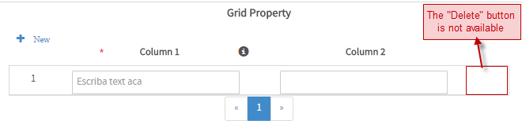
Title
Set the title of the grid in this property.

The title of the grid is displayed in the middle of the screen (of any device) at the top side of the grid.

Controls Supported as Grid Columns
The following are the controls supported inside grids:
Take into account that controls added inside a grid do not accept a Variable related to them. Additionally, these controls have the property Column Width, which must be configured to properly render the grid.
Column Width
This property sets the width each column in the grid will take up when rendering the form. This property is only available for the controls added inside a grid and must be mandatorily filled in order to render the grid inside the Preview or, when running a case.
To set this value in the properties, take into account that depending on the mode of the grid, this setting is done as the following:
- Static: Set the width of the columns in px. Ex. 250px.
- Responsive Set the width of the columns in % percentage.
Note: Take care of making the correct calculations for this property. If the percentage set in the columns surpasses 100% the last columns (the ones at the right from where 100% surpassed) will be cut or will not be shown in the DynaForm.
By default this column is set as 10, so take care to set the property correctly whether it is "responsive" or "static".
To access this property add a control to the grid and go to its properties by clicking on it. For example, if adding the following controls in the grid:

Click on the textbox control "Employee Name" to view its properties and see that at the end of the list there is the property "Column Width".

As there are three columns in the grid, this control will take up 33% when rendering the form.

Only the columns that have set up this property are rendered in the grid. If any of the columns have set this property when rendering the forms it will be shown like the following:

Function
Note: Validation rules must be defined in Text controls involved in mathematical functions to restrict data input.
This property belongs to the Text control in a grid. It offers predefined mathematical functions to sum columns or to obtain their average.
This property only works with text controls which are integer or float in the data type of the variable. A text control with this characteristic must be added as a column in the grid and inside its properties the function must be selected:

When running a case or reviewing it inside the Preview, users will see the results automatically as the quantities are entered.

Grid Control Example
Add a "Grid" control by dragging and dropping it from the Web Controls located on the left hand panel.

Immediately after the control is added, the Create Variable window will appear.
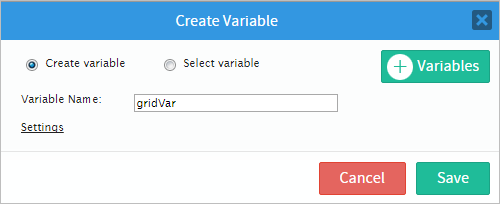
For this example, change the name of the variable and then click on the "Settings" option to add or remove any additional options for the variable. As seen in the image below the "grid" variable does not have many settings. After doing this click on the "Save" button to add the variable to the properties of the control.

After saving the settings of the variable, go to the control and click on any empty space on it and its properties will be displayed on the left side panel where the "variable", "variable data type" and the "id" properties will be now changed as seen in the image below

Now, the "id" property can be use with JavaScript code.

To add functionality and behavior to the control click on the light grey border of the DynaForm (which is the space outside the controls) to display the properties of the DynaForm. When the properties are displayed locate the "javascript" property and click on the "edit" button to open a JavaScript editor.

Once in the editor add the following code which will set the value "ProcessMaker" into the first row and the first column. For more information about javascript code for this control read this section.

When the control is rendered the value which is "ProcessMaker" will be set in the first row and first column as added in the code.

Next is the "title" property which sets the name of the control that will be displayed as a the title of the grid when the control is rendered as seen in the image below.

Now the "hint" property is used to show help when the grid is rendered. For this example add a hint such as "Add more information". The result of this is shown in the image below.

The following property is the "display mode" property which has different effects in a control depending on which option is selected. The illustration below shows every effect the "display mode" property has in the control.

The "layout" property defines the format of how the grid will be shown. The "responsive" option is set as default when the control is added. This option means that the control responds to alterations made when the control is rendered. And on the contrary the "static" option will not respond to the changes and will stay inactive to the alterations.
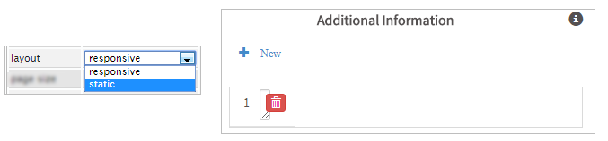
The "page size" control will define the number of rows display per page by adding a pagination control. For example is the page size is chosen to be 20 then the control will add 20 rows and the pagination will add a page.
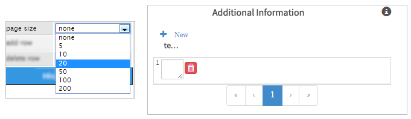
The last two properties are the "add row" and "delete row" properties which by default are always checked meaning that rows can be added and deleted. In the image below a row can be added by clicking on the "+ New" option and delete a row by clicking on the red garbage can.

If this properties are now wished to be shown then unchecked them and the result of that action will be the following.

JavaScript in Grids
To learn more of how to access fields and controls using JavaScript, and the JavaScript functions supported by them; it is very important to first read the documentation about JavaScript in Dynaforms
For the grid elements, take into account the following:
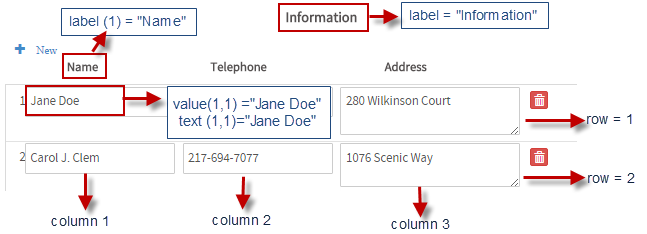
Note: For dropdowns, the value is different than the text:

Accessing Grids with JavaScript
Please, read this documentation to learn ways to access controls and fields inside Dynaforms. Also, take into account the following for grids:
To access grids using jquery use the following methods:
Which is the same.
Remember that when a grid is a complex element that is contained inside a div element in the HTML of the form. The div's ID is the one set in the properties of the grid is set by default as "grid000000000X" where "x" represents the numbering of already added grids in the design. Nevertheless, it is possible to set a custom ID in the properties to have a better management of grids.
The elements inside the grid, such as its title and controls are contained inside their own divs (including their elements) which makes it a complex element. For that reason, it is important to manage the ProcessMaker functions described below. Take into account the following:

JavaScript Functions
| Functions | Description |
|---|---|
jQuery("#gridId").getControl() |
Remember that when the form is rendered, each control is hold inside a Also you can get control directly using: $(“#form\\[fieldid\\]”) $(“#form\\[name\\]”).val(‘Hello world’);</td> |
jQuery("#gridId").getValue(row,col) |
Gets the value of the grid cell. |
jQuery("#gridId").getLabel() |
Gets the label / title of the grid. |
jQuery("#gridId").getLabel(col) |
Gets the label /title of the column. |
jQuery("#gridId").getText(row,col) |
Gets the text of the cell if exist. |
jQuery("#gridId").setValue(value, row, col) |
Sets the value of the cell. |
jQuery("#gridId").setText(text, row, col) |
Sets the text of the cell. Same as setValue. |
jQuery("#gridId").setLabel(gridLabel) |
Sets the grid label. |
jQuery("#gridId").setLabel(columnLabel, col) |
Sets the column label. |
jQuery("#gridId").getSummary("columnId")jQuery("#gridId"). getSummary(col)
|
Get the value of the summary function of the specified column ex: average, sum |
jQuery("#gridId").getNumberRows() |
Gets the number of rows of the grid. |
jQuery("#gridId").addRow()jQuery("#gridId"). addRow([{label1:value1}, {label2:value2}])
|
Adds a new row to the grid and returns the index of the new row. |
jQuery("#gridId").deleteRow(rowIndex) |
Deletes the specified row in the grid. |
jQuery("#gridId").onAddRow(callback) |
Event is fired when a new row is added, and return: row, gridtable, index.
example:
jQuery("#gridId").onAddRow(function(row, grid, index){ //code here }); |
jQuery("#gridId").onDeleteRow(callback) |
Event is fired when a grid row is deleted. For example:
jQuery("#gridId").onDeleteRow(function(row, grid, index){ //code here }); |
jQuery("#gridId").hideColumn(colIndex) |
Hide the specified grid column. |
jQuery("#gridId").showColumn(colIndex) |
Show the specified grid column. |
jQuery("#gridId").disableValidation(colIndex) |
Disable validation in the field. Disable all the configured validations including the required validation. Note that the required asterisk must be removed from the label. |
jQuery("#gridId").enableValidation(colIndex) |
Enable validation in the field. Enable all the validations of the field including the required validation. |
jQuery("#gridId").getControl(row, col) |
Gets one of the controls inside the grid. |
Note: To see code examples of these functions, see JavaScript Functions and Methods.
Hiding a Grid
It is possible to hide or show the table which holds a grid with the toggle jquery event. For example let's hide a grid "grid1" whenever the checkbox "HideGrid" is checked and show it whenever the checkbox is unchecked. To do this, let's create the boolean variable "HideGrid" with the following options:
Let's create a new DynaForm, open it and add a checkbox control and a grid control to the design. Click on the checkbox, go to its properties and relate the control with the variable "HideGrid", previously created and that will be all the configuration to be done for the checkbox.
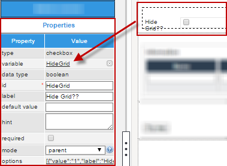
Now, add some controls to the grid (in the example the textboxes "Name" and "Telephone" were added as well as the textarea "Address"), click on the grid to view its properties at the left panel and set the ID of the grid as "grid1".

After doing this, the controls have the necessary configuration to have them working correctly. Now, click on the form to view its properties, click on the "edit..." button and add the following code to the editor.
$('#HideGrid').click(function () {
//console.log($('#HideGrid').getControl().is(":checked")); //uncomment to check which values the checkbox control has
$("#grid1").toggle(this.checked);
});
});
Try it by rendering it in the preview of the form. When it is first rendered the form is like the following:

Check the checkbox "Hide Grid??" to hide the grid.

Uncheck it to show the grid

To check the value of the checkbox when the user clicks on it, uncomment the following line in the code:
Let's see the values the checkbox took in the console of the browser (press the "F12" key of the board), and view the console:

When checked, the checkbox returns "true", when unchecked, the checkbox returns "false"
Fixed precision formulas in grids
The formulas in grids do not specify the precision of their calculations, so the results of formulas can have a variable number of decimal digits.
For example, an "invoiceList" grid contains fields with the IDs "price", "taxRate" and "total" to calculate the total price of each item. The "total" field uses the following formula:
The number of decimal digits in the "total" field changes depending on the numbers entered into the "price" and "taxRate" fields:

Another problem is that having multiple fields using formulas in grids can cause problems in the calculations. For example, in the following grid, the "tax" and "total" fields both use formulas:
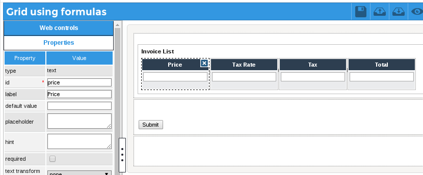The two formulas in the same grid cause conflicts and yield erroneous results:

Both of these problems can be fixed by using JavaScript. Instead of using formulas to calculate the "tax" and "total" fields, JavaScript can be added to the DynaForm to calculate the values of the "tax" and "total" fields in the grid. The following JavaScript code loops through the grid and recalculates the "tax" and total" for each row in the grid when any value is changed in the DynaForm:
var rounder = Math.pow(10, _digits);
return (Math.round(_float * rounder) / rounder).toFixed(_digits);
}
$("form").setOnchange(function(field, newVal, oldVal) {
var totalRows = $("#invoiceList").getNumberRows();
for (var i = 1; i <= totalRows; i++) {
price = parseFloat($("#invoiceList").getValue(i, 1));
taxRate = parseFloat($("#invoiceList").getValue(i, 2));
tax = price * taxRate;
//make sure the user entered valid values:
if (isNaN(tax)) {
tax = '';
total = '';
}
else {
tax = roundToFixed(tax, 2);
total = roundToFixed(price + (price * taxRate), 2);
}
$("#invoiceList").setValue(tax, i, 3);
$("#invoiceList").setValue(total, i, 4);
}
});
The custom roundToFixed() function is used to set two decimal digits in the calculations for the "tax" and "total" fields. To learn more, see Working with Numbers in JavaScript. The isNaN() function is used to check whether the user entered valid numbers in the fields. If it calculates a result which is not a number (NaN), then the tax and total fields are set to '' (empty string).
Using this JavaScript code, both fields are calculated correctly with two decimal digits when the user changes a value in the grid:

To see an example of this code, download the sample Fixed_precision_grid_math-1.pmx process.
Change event handlers inside grids
ProcessMaker does not provide a setOnchange() method for grids or the fields inside grids, however, change event handlers can be set for the individual fields inside a grid. The fields inside a grid have an ID of "form[gridId][rowNumber][fieldId]", where the first row number is 1, the second row is 2, etc.
For example, a grid with the ID "ReceiptList" contains a "receipt" File field to upload a scanned file of a receipt and a "amount" textbox to enter the total for a receipt. The "amount" field has a sum function, which lists the summed total for all the receipts below the column.

The "receipt" field in the first row would have an ID of "form[ReceiptList][1][receipt]" and the "amount" field in the second row would have an ID of "form[ReceiptList][2][amount]". To access a field inside a grid by its ID with a jQuery selector, the [ and ] in the ID have to be escaped with \\:
For example, the following JavaScript code sets the color of the text in the amount field in the second row to green.
A change event handler can be set for a single field inside a grid in this manner:
For example, the following JavaScript code sets a change event hander for the "amount" field in the first row in the grid. If the user sets the "amount" field in the first row to a value greater than 300, then the border color of this field is changed to red. The field's css() method is called to change its border color. Note that $(this) is used to convert from the field's DOM object to its jQuery object, so its css() method can be called.
if (this.value > 300) {
$(this).css("border", "1px solid red");
}
else { //set the "amount" field's border back to default light gray color:
$(this).css("border","");
}
} );
If the user enters 400 in the "amount" field in the first row, then its border changes to red.

Grids can have variable number of rows, so this same change event handler has to be set for each new "amount" field when the user clicks on the New button to add another row to the grid. The grid.onAddRow() method can used to execute code when a new row is added to a grid. The following code sets a new change event handler for each "amount" field in the new row added to the "ReceiptList" grid:
if (this.value > 300) {
$(this).css("border", "1px solid red");
}
else { //set the "amount" field's border back to default light gray color:
$(this).css("border","");
}
}
//set the change event handler for the first row when the DynaForm loads:
$("#form\\[ReceiptList\\]\\[1\\]\\[amount\\]").change( checkAmount );
//set the change event hander for each new row added to the grid:
$("#ReceiptList").onAddRow( function(aRow, oGrid, rowNumber) {
$("#form\\[ReceiptList\\]\\[" + rowNumber + "\\]\\[amount\\]").change( checkAmount );
} );
An easier way to set a change event handler in grids is to use the form.setOnchange() method for the entire DynaForm and check whether the ID of the field which was changed is inside the grid. The form.setOnchange() method will report that the ID of a changed field inside a grid is "[gridId][rowNumber][fieldId]", such as "[ReceiptList][2][amount]".
The following example shows how to change the border color of a grid depending on the total of a sum function in a grid.
The following JavaScript code is added to the DynaForm to check whether the summed total for the "amount" column is greater than 500. If so, it changes to the grid's border color to red. If less than 500, then it is set back to the default color, which is a light gray color.
//if a value is changed inside the "ReceiptList" grid:
if (fieldId.search(/^\[ReceiptList\]/) == 0) {
//if the summed "amount" column is greater than 500:
if ($("#ReceiptList").getSummary("amount") >= 500) {
//change the "ReceiptList" grid's border to red
$("#ReceiptList").find("div.pmdynaform-grid-tbody").css("border", "1px solid red");
}
else { //return grid to default border color
$("#ReceiptList").find("div.pmdynaform-grid-tbody").css("border", "");
}
}
}
$("form").setOnchange( checkAmountTotal );
The grid.getSummary() method is used to obtain the summed total of the "amount" column in the "ReceiptList" grid. The border of the grid is in a <div> whose style is named pmdynaform-grid-tbody.
When the user enters values in the "amount" fields which total more than 500, then the border color of the grid changes to red, but it changes to light gray when the summed total is less than 500.

Disabling grids
A grid and all the controls inside it can be disabled with the following JavaScript code:
Likewise, all the controls inside a grid can be enabled with the following code:
Example: Disable grid when a checkbox is marked:
A DynaForm has a checkbox with the ID "disableGrid" and a grid with the ID "clientList.
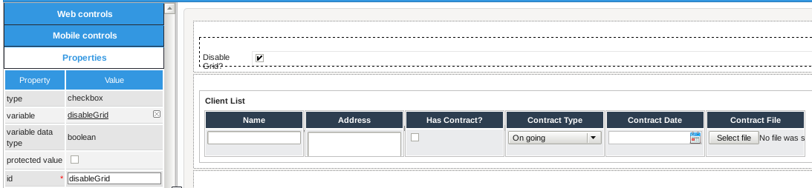When the "disableGrid" checkbox is marked, the grid's controls are disabled, and when unmarked, the grid's controls are enabled. The following JavaScript code uses the setOnchange() method to add a change event handler to the "disableGrid" checkbox to enable or disable the grid:
//if using PM 3.0.1.8 or later:
if (newVal == '["1"]') {
$("#clientList").find("input,button,textarea,select").attr("disabled", true);
}
else {
$("#clientList").find("input,button,textarea,select").attr("disabled", false);
}
});
Note: This example works in version 3.0.1.8 and later. Unfortunately, the setOnchange() method does not work correctly with checkboxes in version 3.0.1.7, so it is recommended to use a dropdown or a button instead of a checkbox if using version 3.0.1.7.
Example: Disable existing rows in a grid, but allow new rows
The "clientList" grid from the previous example allows new rows to be added to the grid, but it does not allow existing rows to edited or deleted. When the DynaForm loads, it checks the data property of the grid. If it is equal to an empty array, then it is a empty grid, so it doesn't disable the first grid row, which is created by default. Otherwise, the code disables the existing rows and then add one new row at the end of the grid that the user can edit.
//if not an empty grid:
//(need to convert to JSON string because can't compare two arrays)
if (JSON.stringify(oGrid.getInfo().data) != '[]') {
//disable all the fields in all the existing rows:
oGrid.find("input,button,textarea,select").attr("disabled", true);
//add one empty row at the end which isn't disabled:
oGrid.addRow();
}
Getting grid rows
Each row inside a grid is placed inside a <div> with the class "pmdynaform-grid-row". An array of the rows in a grid can be obtained with the following code:
The DOM object for the div which holds a specified grid row can be obtained with:
Where row-number is 0 for the first row, 1 for the second row, 2 for the third row, etc.
This DOM object can be converted into a jQuery object by enclosing it in $(DOMobject):
Example: Change background color of rows
Using the "clientList" grid from the previous example, the following code sets the background color to red of every row whose "name" field is empty:
function setEmptyRowsToRed() {
var aGridVals = $('#'+gridId).getValue();
//loop through grid and check whether the "name" field is empty in each row
for (i = 1; i <= aGridVals.length; i++) {
if ($("#form\\["+gridId+"\\]\\["+i+"\\]\\[name\\]").val() == "") {
//subtract 1 because array starts counting from zero, not one.
$($("#"+gridId).find("div.pmdynaform-grid-row")[i-1]).css("background-color", "red");
}
}
}
//execute when value in form changes:
$("form").setOnchange( function (fieldId, newVal, oldVal) {
setEmptyRowsToRed();
});
setEmptyRowsToRed(); //execute when DynaForm loads
Disabling grid rows
The controls inside a specified grid row can be disabled with the following JavaScript code:
Where row-number is 0 for the first row, 1 for the second row, 2 for the third row, etc.
Example:
The "clientList" grid from the previous example has a hidden field with the ID "disableRow" in each row. The contents of this grid are set by following trigger code which was executed before the DynaForm:
Then, the following JavaScript code is added to the DynaForm which holds the "clientList" grid. It loops through each row when the DynaForm loads and disables any row whose "disableRow" field is set to "yes":
var aRows = $("#"+gridId).find("div.pmdynaform-grid-row");
var aGridVals = $('#'+gridId).getValue();
//loop through grid and check whether the "disableRow" field equals "yes" in each row
for (i = 1; i <= aGridVals.length; i++) {
if ($("#form\\["+gridId+"\\]\\["+i+"\\]\\[disableRow\\]").val() == "yes") {
//subtract 1 because array starts counting from zero, not one.
$(aRows[i-1]).find("input,button,textarea,select").attr("disabled", true)
}
}
Maximum number of grid rows
The grid.onAddRow() and grid.deleteRow() methods can be used to limit the maximum number of rows in a grid. If using the ProcessMaker App, then use grid.onShowRowDialog() instead of grid.onAddRow().
Example: The following JavaScript code limits a grid whose whose ID is "clientsList" to a maximum of 5 rows.
//if using ProcessMaker App:
if (env == "android" || env == "iOS") {
$("#clientList").onShowRowDialog( function(aNewRow, oGrid, rowIndex, rowModel) {
if (rowIndex > 5) {
this.deleteRow(rowIndex);
}
});
}
else {
$("#clientList").onAddRow( function(aNewRow, oGrid, rowIndex) {
if (rowIndex > 5) {
this.deleteRow(rowIndex);
}
});
}
Note: This code example works in version 3.0.1.8 and later. For earlier versions, use the following code which doesn't support the ProcessMaker App:
if (rowIndex > 5) {
this.deleteRow(rowIndex);
}
});
Checking if a minimum number of grid rows
The form.setOnSubmit() method can be used to check whether the user added a minimum or maximum number of rows to a grid, before submitting a DynaForm. The submit action can be stopped by creating an event handler which returns false. The grid.getNumberRows() method is used to check how many rows are in a grid.
Example:
A grid with the ID "clientsList" needs to have a minimum of at least 3 rows and a maximum of no more than 10 rows. If the clients list has too few or too many clients, the following JavaScript code displays a message to the user and stops the submit action by returning false, so the user has a chance to delete or add rows before submitting the form again.
getFormById(formId).setOnSubmit( function() {
if ($("#clientsList").getNumberRows() < 3) {
alert("Please add at least 3 clients to the list");
return false; //stop form submit
}
else if ($("#clientsList").getNumberRows() > 10) {
alert("A maximum of 10 clients is allowed.\n"+
"Please eliminate some clients.");
return false; //stop form submit
}
});
Fixed number of grid rows
To set a fixed number of rows in a grid, first unmark the add row and delete row properties in the grid, so the user cannot add and delete rows. Then, create a for loop which calls grid.addRow() to add as many rows to the grid as needed. Remember that one row already exists by default.
Example:
If needing 5 rows in a grid whose ID is "clientsList", the following JavaScript will add 4 additional rows to the 1 existing row when the DynaForm loads:
$("#clientsList").addRow();
}
If the grid may already be populated, the following code uses grid.getNumberRows() to check how many rows need to be added or deleted to get a total of 5 rows. It then calls grid.addRow() or grid.deleteRow() repeatedly to get 5 rows in the grid:
if (nRowsNeeded > 0) {
for (i=0; i < nRowsNeeded; i++) {
$("#clientsList").addRow();
}
}
else if (nRowsNeeded < 0) {
for (i=0; i > nRowsNeeded; i--) {
$("#clientsList").deleteRow();
}
}
Clearing a grid
If needing to clear a grid, then all the rows in the grid can be deleted by looping through the rows in the grid and calling the grid.deleteRow() method for each row. The first row in grids, however, cannot be deleted, so it is necessary to loop through the fields in the first row and set their values to "" (empty string).
The following JavaScript example defines the When a DynaForm is submitted which contains a grid field, the case variable related to the grid contains an associative array of associative arrays. The outer associative array has keys which start counting from the number 1 (not 0 like a normal array). Each row in the grid is stored as an inner associative array where the grid field names are the ID's set in the designer for each control inside the grid and the entered data are the values. A new grid can be populated by assigning an associative array of associative arrays to the case variable for the grid. For example, to populate a grid named "EmployeesGrid" with the fields "Name", "Salary" and "HireDate": A grid can also be populated by a database query, since SELECT statements with executeQuery() return records as an array of associative arrays, which is the same format used by grids. As long as the database has the same field names as the grid field names, the data will be displayed correctly in the grid. Remember that field names are case sensitive. For example, the values in the "EmployeesGrid" can be set by querying a table named Employees which also has the fields Name, Salary and HireDate. Generally, grid columns must have the same ID as the columns of the table from where data will be retrieved. If the database uses different field names than the grid field names, then use AS to rename the fields. For example, if an external database with the table EMPLOYEES contains the fields FULL_NAME, STARTING_SALARY and HIRE_DATE, then those fields can be renamed to match the field names in the “EmployeesGrid”: The APP_CACHE_VIEW table in the database holds information about cases, which is used to generate the list of cases under the Home menu. Each record in this table contains information about a task in a case, which has been assigned to a user. This example shows how to create a DynaForm for searching the APP_CACHE_VIEW table and displaying information about the tasks in a grid. Managers might use this information to evaluate how well workers are doing their tasks. This example also shows how to execute a trigger by clicking on submit button and then use a trigger which populates a grid and returns to the DynaForm to redisplay it with the populated grid. First, create following variables:
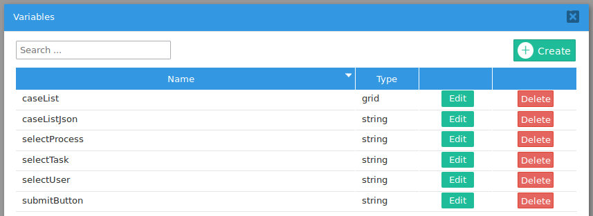 Then, create a DynaForm with fields to search for and a grid to display the search results: This DynaForm has the following controls: This DynaForm has the following JavaScript code:
When the "Search" button is clicked, the value "search" is placed in the "submitButton" hidden field, so that the subsequent trigger will know that the "Search" button was clicked to close the form. When the DynaForm loads, the JavaScript code checks whether there is a value in the "caseListJson" field. This hidden field holds the contents of the grid in JSON form. This information is used to set the links in the "caseNo" fields in the grid. The code first converts the JSON string into an object of objects which holds the data for each row in the grid. It then loops throught each row in the grid and sets the "caseNo" links.clearGrid() function to clear the contents of a specified grid. In this example a grid with the ID "clientsList" needs to be cleared when a custom button with the ID "emptyGrid" is clicked. The code example creates a clearGrid() function.
var nRow = $("#"+gridId).getNumberRows();
for (; nRow >= 1; nRow--) {
//Can't delete the first row, so clear all its fields
if (nRow == 1) {
var aCols = $("#"+gridId).getInfo().columns;
for (nField in aCols) {
var val = '';
if (aCols[nField].type == 'checkbox') {
val = "0";
}
//workaround to clear date fields. See: https://processmaker.atlassian.net/browse/TRI-1280
if (aCols[nField].type == 'datetime') {
var gridFieldId = 'form[' + gridName + '][1][' + aCols[nField].id;
$("[id='"+gridFieldId+"]']").val('');
$("[id='"+gridFieldId+"_label]']").val('');
}
else if (aCols[nField].type != 'link') {
$("#"+gridId).setValue(val, 1, parseInt(nField)+1);
}
}
}
else {
$("#"+gridId).deleteRow(nRow);
}
}
}
$("#emptyGrid").click( function() {
clearGrid("clientsList");
} );PHP in Grids
Populating Whole Grids
Populating Grids Using a Database Query
Displaying cases info in grids
caseList: Holds the grid with information about the cases.
caseListJson: Holds a JSON string which contains the information which is displayed in the grid. This information will be passed in a hidden field to the DynaForm and will be used to set the links to the cases.
selectProcess: Holds the unique ID of a process to search for in the APP_CACHE_VIEW table.
selectTask: Holds the unique ID of a task to search for in the APP_CACHE_VIEW table.
selectUser: Holds the unique ID of an assigned user to search for in the APP_CACHE_VIEW table.
submitButton: Indicates which button was clicked to close the DynaForm with the grid of case information.

selectProcess string variable. It is populated with the following SQL query:
SELECT '', 'All processes' UNION SELECT PRO_UID, PRO_TITLE FROM PROCESS
selectTask string variable. It is dependent field, which is populated with the tasks from the selected process. It uses the following SQL query:
SELECT '', 'Any task' UNION SELECT TAS_UID, TAS_TITLE FROM TASK WHERE PRO_UID=@@selectProcess
selectUser variable. It is populated with the following SQL query:
SELECT USR_UID, concat(USR_FIRSTNAME, ' ', USR_LASTNAME, ' (', USR_USERNAME, ')') FROM USERS
caseList variable. It has the following grid fields which are all in "view" mode:
$("#submitButton").setValue("search");
});
if ($("#caseListJson").getValue() != '') {
var oCaseList = JSON.parse($("#caseListJson").getValue());
var nRows = $("#caseList").getNumberRows();
for (i = 1; i <= nRows; i++) {
var caseNo = oCaseList[i]['caseNo'];
var url = oCaseList[i]['url'];
$("#form\\[caseList\\]\\[" +i+ "\\]\\[caseNo\\]").find("span").html(caseNo);
$("#form\\[caseList\\]\\[" +i+ "\\]\\[caseNo\\]").prop("href", url);
}
}
@@submitButton = '';
$where = '';
if (@@selectProcess) {
$where .= "PRO_UID='".@@selectProcess."'";
}
if (@@selectTask) {
$where .= (empty($where) ? '' : ' AND ') . "TAS_UID='".@@selectTask."'";
}
if (@@selectUser) {
$where .= (empty($where) ? '' : ' AND ') . "USR_UID='".@@selectUser."'";
}
$where = (empty($where) ? '' : 'WHERE ') . $where;
$sql = "SELECT APP_UID, DEL_INDEX, APP_NUMBER, APP_STATUS,
USR_UID, PREVIOUS_USR_UID, TAS_UID, PRO_UID, DEL_DELEGATE_DATE,
DEL_INIT_DATE, DEL_FINISH_DATE, DEL_TASK_DUE_DATE, DEL_RISK_DATE,
APP_TITLE, APP_PRO_TITLE, APP_TAS_TITLE, APP_CURRENT_USER,
APP_CREATE_DATE, APP_FINISH_DATE, APP_UPDATE_DATE FROM APP_CACHE_VIEW
$where ORDER BY APP_NUMBER DESC";
$aCases = executeQuery($sql);
@=caseList = array();
$i = 1;
foreach ($aCases as $aCase) {
$startTime = strtotime($aCase['DEL_INIT_DATE']);
$finishDate = $aCase['DEL_FINISH_DATE'];
$finishTime = strtotime($finishDate == null ? date('Y-m-d H:i:s') : $finishDate);
$hours = ($finishTime - $startTime)/60/60;
$url = "../cases/open?APP_UID=".$aCase['APP_UID']."&DEL_INDEX=".
$aCase['DEL_INDEX']."&action=draft";
@=caseList[$i] = array(
'caseNo' => $aCase['APP_NUMBER'],
'url' => $url,
'process' => $aCase['APP_PRO_TITLE'],
'task' => $aCase['APP_TAS_TITLE'],
'user' => $aCase['APP_CURRENT_USER'],
'startDate' => $aCase['DEL_INIT_DATE'],
'overdueDate'=> $aCase['DEL_TASK_DUE_DATE'],
'finishDate' => $aCase['DEL_FINISH_DATE'],
'totalTime' => $hours
);
$i++;
}
//uncomment to debug:
//print "<pre>"; var_dump(@=caseList); die;
@@caseListJson = json_encode(@=caseList);
PMFRedirectToStep(@@APPLICATION, @%INDEX, 'DYNAFORM', '512296547583375724080b7028326320');
}
This trigger is set to execute after the DynaForm.
The trigger code first checks whether the "Search" button was clicked. It then constructs an SQL query based on the values selected in the "selectProcess", "selectTask" and "selectUser" fields. Then, it uses executeQuery() to search in the APP_CACHE_VIEW table for all the tasks in cases which match the search criteria. Then, creates an array to hold the contents of the "caseList" grid and populates it by looping through the records returned by the query. For each task, it calculates the number of elapsed hours and constructs the URL to open the task in the case. Note that if the task is already completed, then this URL will direct to the case summary. If the logged-in user doesn't have process permissions to open the case, then he/she will be directed to the Inbox.
Finally, json_encode() is called to convert the contents of the grid into a JSON string and place them in the "caseListJson" hidden field. The PMFRedirectToStep() function is used to redirect the web browser back to the DynaForm and display the populated grid.
If this DynaForm is used in a process, then it can be executed over and over without ever terminating the case, so only one new case needs to created. After selecting the search criteria and clicking on the "Search" button, the grid will be populated:

To test this process, download and import the Show Task Times process (right click on the link and select "Save Link As").